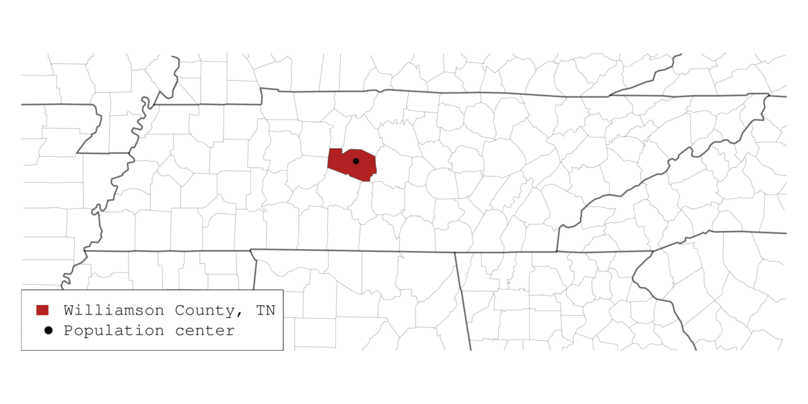
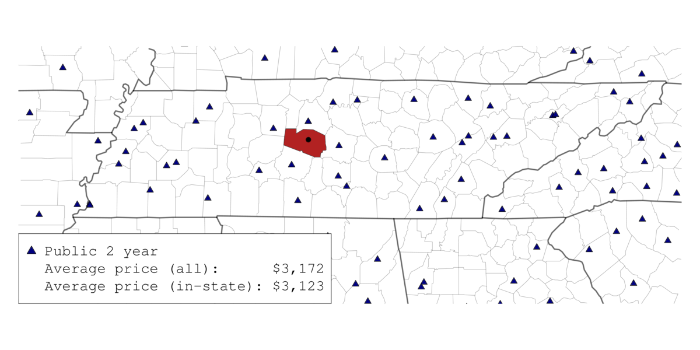
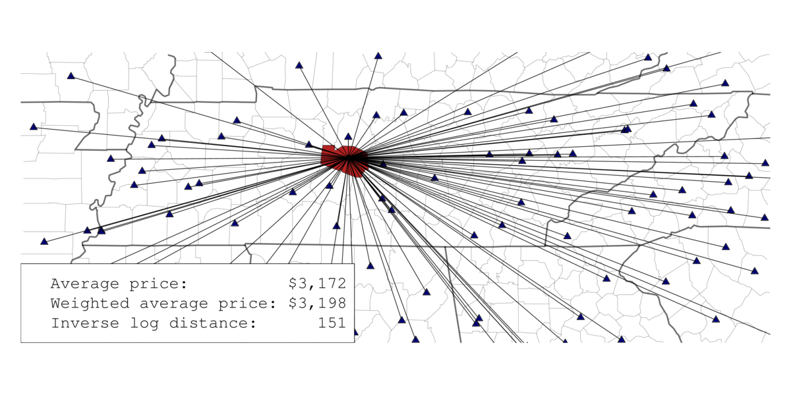
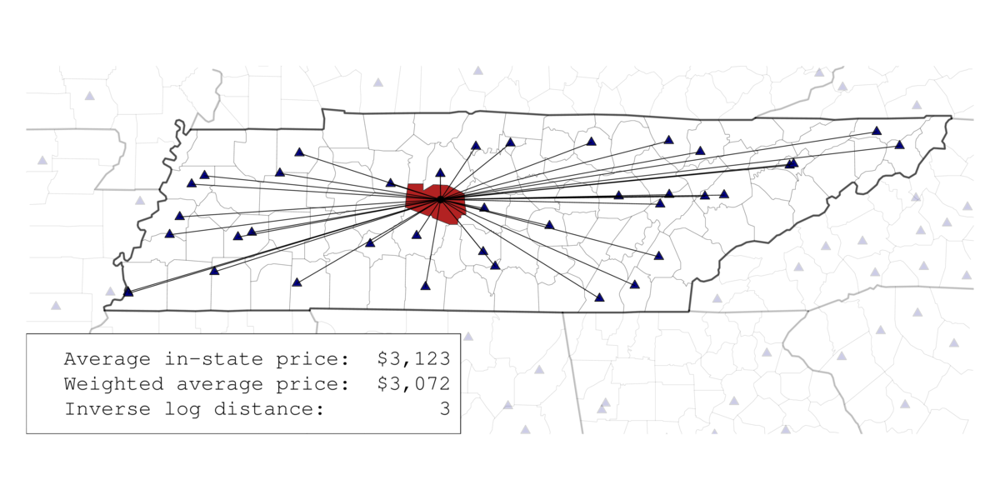

Methodology
Visualizing distance measure
The following images are meant to give a visual example of how the distance-weighted average price measures were computed for each county in each year. The first figure uses Williamson County, TN, as an example county. The population center coordinates are used as the origin point for distance measures to sample schools.

The second figure shows the location of all public two-year colleges in the area. The legend shows the average price of all public two-year colleges in 2012 as well as the average price for similar colleges only in Tennessee. These would be the unweighted average price for Williamson County if it shared the same price as all US counties/ Tennessee counties, respectively.

The third figure shows how the geodesic distance measure links Williamson County to all public four-year colleges (including those not shown for clarity). The weighted average price for Williamson County is changed as a function of this distance from the unweighted average price. The final figure is similar to the one before except that the sample of public two-year colleges is limited to those that are in Tennessee.
 
Weighted average price formulas
The weighted average price (WAP) of college for each United States county in the lower 48 in each year is computed using the following formula:
where \(price_{ky}\) is cost of institution \(k\) in year \(y\) and \(g\) is a weight for each cell. The weight \(g\) is defined as
with \(d_{ik}\) as the geodesic distance in miles between the county population centroid \(i\) and institution \(k\) and \(r\) as the drop off rate of influence.
For every county in the sample across each sample year, we compute the geodesic distance to each postsecondary institution using the Vincenty computation formula in the R package geosphere, creating an \(I \times K\) matrix where the sum of each row represents the total distance of all postsecondary institutions from the county and the fraction of each cell over the row total the proportional distance of each institution. So that closer institutions carry more weight than farther ones, weights for each cell, \(g_{ik}\), are computed by dividing the inverse of the proportional distance by the row sum of the inverse proportional distances. To change the rate at which distance has influence, the exponential term, \(r\), may be modified. At \(r = 1\), weights are a linear function of distance; when \(r > 1\), weights exponentially decay as distance increases. As \(r\) increases, the cost of the nearest institutions are up-weighted. In the limit, \(r \rightarrow \infty\), all weight will be placed on the nearest institution. We use a rate of \(r = 2\) to compute weights used to adjust the college price values for the interactive maps.
To compute the weighted average price for each county in each year, \(WAP_{iy}\), these weights are applied to a vector of yearly institutional costs, \(price_{ky}\), that are taken from IPEDS, and summed with that year. This results in an average postsecondary price for each county in each year. We repeat this process for different samples of schools: all Title IV schools, all public schools, all pubic four-year schools, and all public two-year schools. These different samples are represented by the College sample dropdown menu on the interactive maps page. Within each school sample, we compute two sets of weights: one that allows out-of-state schools to figure in the weighted average price equation and another that limits the sample of schools to only those located in the same state as the county. These different computations are represented in the Weighting dropdown menu.
Data
United States Census Bureau
County population center coordinates were taken from the 2000 and 2010 United States Census. Because our study period spans from 1997 to 2012, coordinates from the 2000 census were used for the years 1997 to 2005 while the 2012 coordinates were used for years thereafter.
Integrated Postsecondary Education Data System (IPEDS)
College coordinates and costs were taken from IPEDS variables for published tuition in each year of the study period. In the case of public institutions, the lower of in-state and in-district were used. All dollar amounts are inflation-adjusted to 2013 dollars to show the change in real dollars over time.